Torne-se um dentista reconhecido e valorizado por meio das lentes de porcelana.
Com Felipe e Bruna Veiga, dentista e ceramista da Nive: do briefing à cimentação, com o mesmo padrão que eles usam na clínica.
Torne-se um dentista reconhecido e valorizado por meio das lentes de porcelana.
Você faz o preparo. O laboratório faz a peça.
Quando ela chega, não é o que você planejou.
Você sabe que está ruim, mas não sabia dizer o porquê...
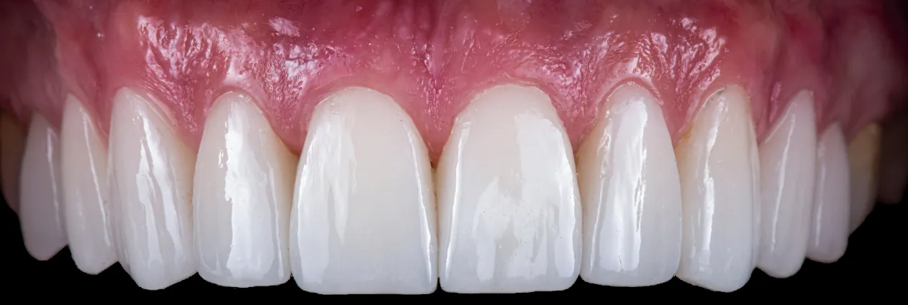
O padrão que você vai aprender, caso a caso.
+324profissionais treinados por nós atendem no Brasil todo com o mesmo padrão de qualidade.
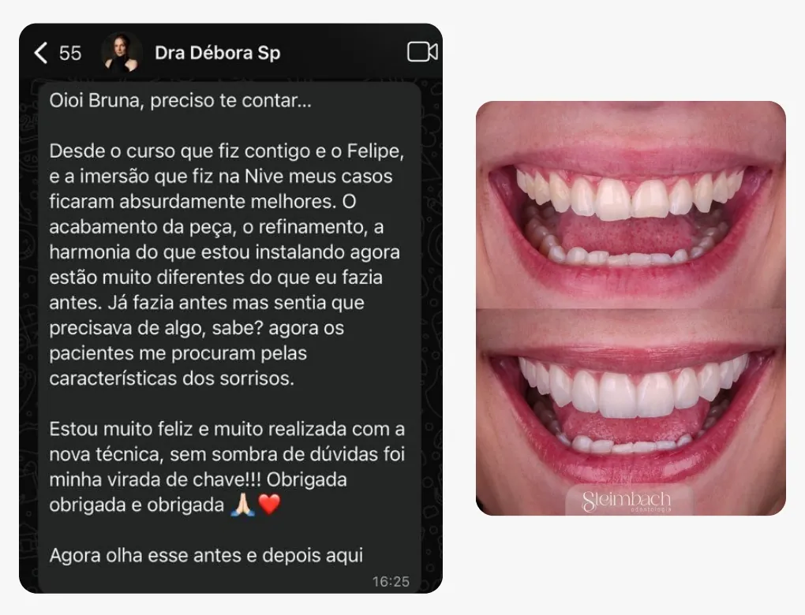
Esteja onde estiver na porcelana
Se você ainda não faz
Comece com segurança: saiba quais casos aceitar, como planejar e o que pedir ao laboratório desde o primeiro paciente.
Se você já faz
Eleve o padrão: resultados mais naturais, menos retrabalho e domínio dos casos complexos, que são os de maior valor.
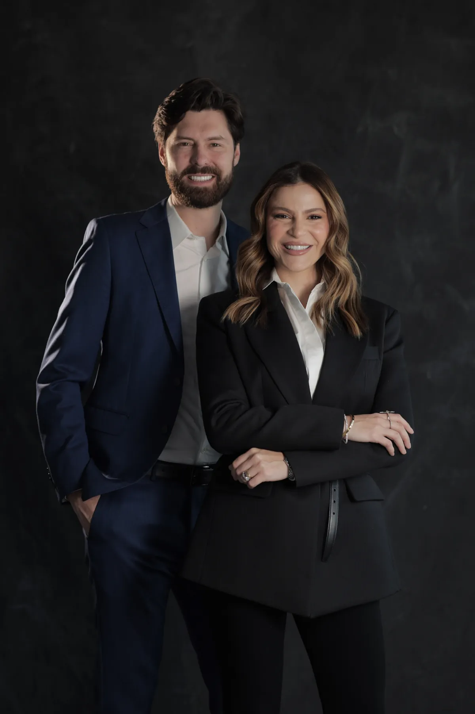
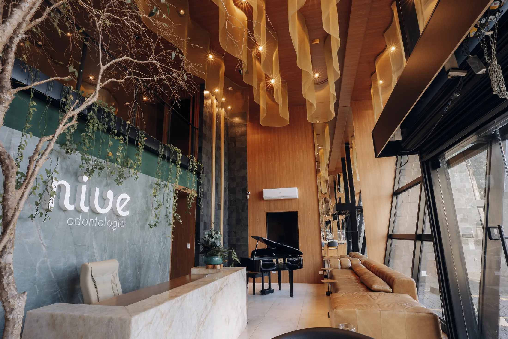
Felipe e Bruna Veiga
Fundadores da Nive Odontologia: clínica e laboratório sob o mesmo teto.
Felipe Veiga, cirurgião-dentista, e Bruna Veiga, ceramista. Na formação você aprende os dois lados da mesma lente.
O conteúdo
9 módulos, +50 aulas e certificado de conclusão.
- Entendendo as dores e desejos do seu paciente para alcançar a verdadeira satisfação e se diferenciar no mercado
- Limitações do caso e soluções clínico-protéticas para um planejamento estratégico
- Mockup: quando fazer, quando não fazer
- Planejamento e diretrizes para o laboratório de prótese
- Gengiva saudável e harmônica: protocolo de reabilitação gengival e análises de casos com plástica gengival
- Anatomia dental aplicada às reabilitações estéticas de alto valor
- Efeitos ópticos cruciais em elementos protéticos para atingir naturalidade e harmonia do sorriso
- Visagismo: análise do formato do rosto e personalidade na escolha do formato dos dentes da reabilitação do seu paciente
- Dissilicato de lítio injetado e fresado: o famoso emax
- Feldspato fresado: vale a pena?
- Aplicação cerâmica sobre dissilicato (cut back)
- Refratário puro: o queridinho dos sorrisos naturais
- Zircônia e sua utilidade nas reabilitações estéticas sobre implantes e dentes
- CAD/CAM: entenda a nova era digital da odontologia de uma vez por todas
- Impressão em resina com carga cerâmica, novidade no mercado que tem conquistado os pacientes com menor poder aquisitivo
- Ponto de atenção no dissilicato de lítio: formas de apresentação no mercado, translucidez e opacidade
- Lentes sem preparo (técnica prepless): a mais procurada por pacientes A+
- Preparo para laminado cerâmico puramente estético
- Preparo minimamente invasivo: diferenças de preparo para uma lente fresada, injetada ou aplicada
- Preparo ideal para coroa
- Preparo ideal para coping de Zircônia
- Ajustes interproximais: o primeiro passo para garantir a estética e saúde dos seus casos
- Ajustes cervicais: crucial para periodontia e estética
- Fundamentos anatômicos e técnicas para garantir o seu padrão estético com o seu protético
- Ajuste estético no elemento protético cerâmico: diminuindo o tamanho do dente na técnica adequada
- Técnicas e aspectos visuais para deixar o dente com aparência mais larga
- Técnicas e aspectos visuais para deixar o dente com aparência mais final
- Técnica de refinamento de canino, linhas, arestas área de espelho, área de sombra e bossa
- Como tirar o aspecto de lente volumosa
- Como trazer para as lentes os aspectos de naturalidade de um dente através das microtexturas e maquiagem no dissilicato
- Prova de mockup: técnica com resina bisacrílica e mockup impresso
- Tipos e cores de cimentos: análises de casos clínicos e materiais indicados
- Técnica de cimentação padrão: fundamentos básicos de uma cimentação de excelência
- Diferenciação de técnicas cimentação em diferentes materiais e técnicas protéticas
- Substrato favorável e a utilização da técnica de cimentação de laminados extra finos
- Cimentação em dente escurecido
- Acabamento cervical pós cimentação
- Acabamento interproximal pós cimentação
- Ajuste oclusal: a garantia de durabilidade e resistência dos seus trabalhos
- Técnica de cimentação sobre metal
- Técnica de cimentação sobre Pino de fibra de vidro
- Técnica de cimentação sobre coping
- Técnica de cimentação em dentina
- Técnica de cimentação de porcelana sobre porcelana
- Anatomia estética e funcional de casos puramente estéticos a reabilitações com mordidas não padrão
- Preparo de dentes da arcada inferior
- Prova e ajustes estéticos
- Ajuste oclusal
- Dente escurecido: como mimetizar e alcançar um resultado impecável
- Dentes vestibularizados
- Corrigindo dentes desalinhados sem o uso da ortodontia
- Substrato muito amarelado ou casos de tetraciclina
- Corrigindo mordida classe 3 com porcelana
- Corrigindo mordida profunda com porcelana
- Corrigindo mordida cruzada com porcelana
- Fechamento de diastemas
- Implantes em áreas estéticas
- Pinos metálicos na região de dentes anteriores
- Retrabalho (remoção de porcelanas antigas com broca e lazer)
- Planejamento reverso para iniciar o caso com maior precisão
- Planejando e conciliando tratamentos multidisciplinares
- Igualando coroas de porcelana sobre implante, pinos, e lentes para obtenção de um resultado harmônico
- Aumento de DVO (dimensão vertical oclusal)
- Ajuste de antagonista/adjacente em casos de movimentação dentária
Travou num caso? Fale direto com a gente.
O suporte é pelo WhatsApp, com a Bruna e o Felipe. Envie fotos dos seus casos e receba acompanhamento e direcionamento.
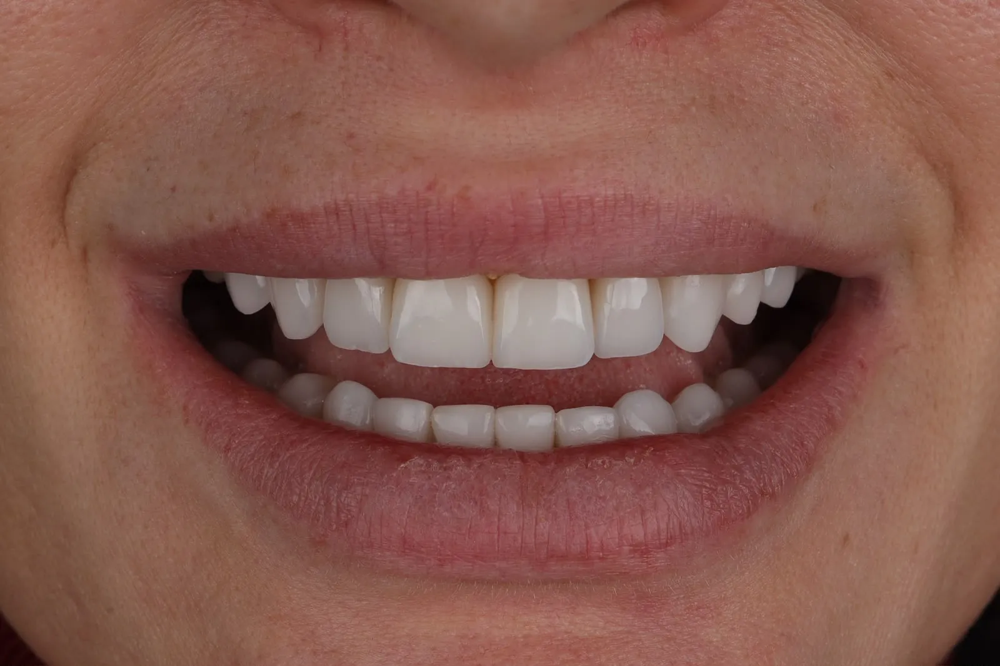
Bruna, a peça chegou assim. Aceito ou peço ajuste?Plástica Gengival do Básico ao Avançado
com a Dra. Juliana Pereira e o Dr. Felipe Veiga
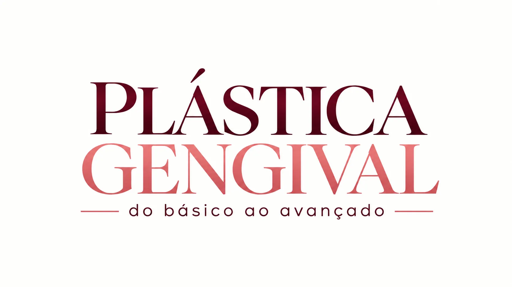
Daqui a um ano, onde você quer estar?
Se nada mudar, os próximos 12 meses vão ser parecidos com os últimos.
Garanta sua vaga
Garantia incondicional. Assista às primeiras aulas. Não gostou, devolvemos 100% do seu dinheiro.
Perguntas frequentes
Sim. A formação começa pelo briefing e pela seleção de casos, antes de qualquer preparo, e segue a ordem em que o tratamento acontece na clínica.
Como orientar o laboratório, avaliar a peça na prova, ajustar com segurança e conduzir arcada inferior, casos complexos e reabilitações.
Pelo WhatsApp, direto com a Bruna e o Felipe. Você envia fotos dos seus casos e recebe acompanhamento e direcionamento.
Pix ou cartão em até 12x. Também dá para combinar Pix e cartão, ou dividir em até 2 cartões.
1 ano de acesso a todas as aulas, com certificado de conclusão.
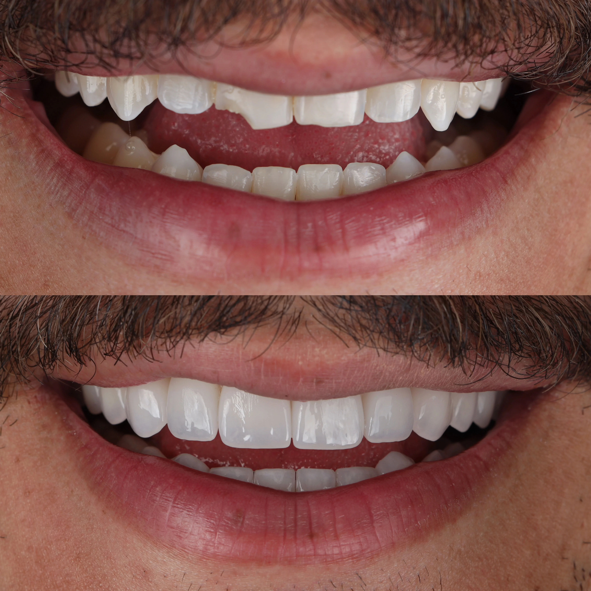
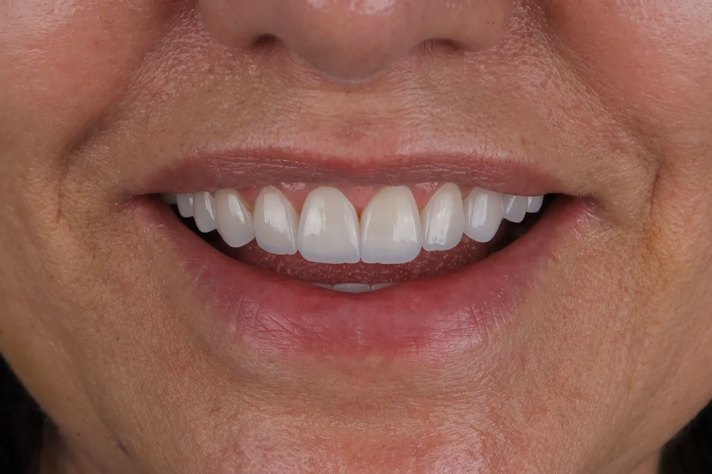
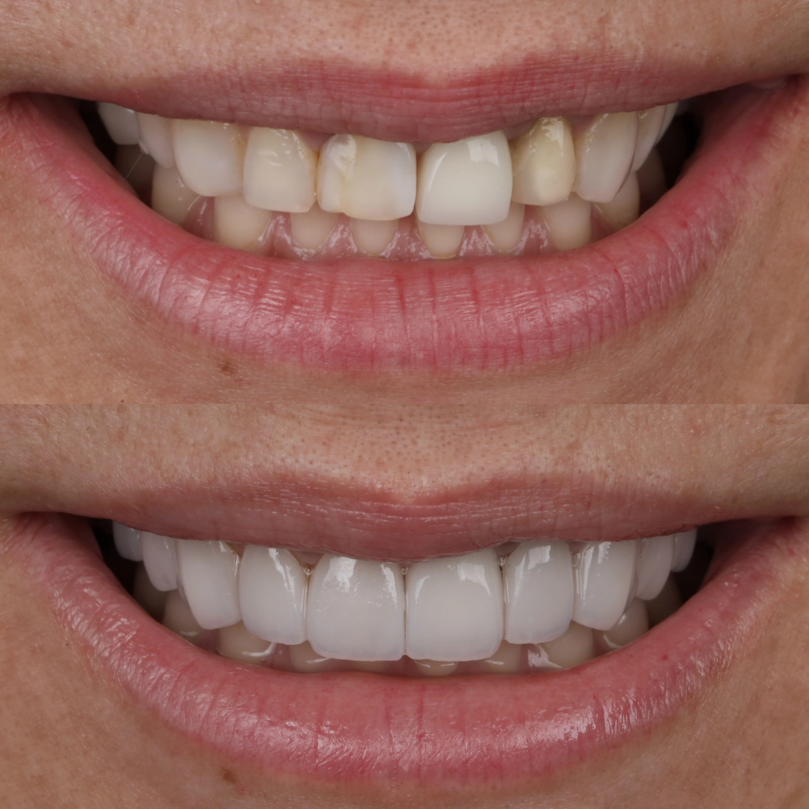
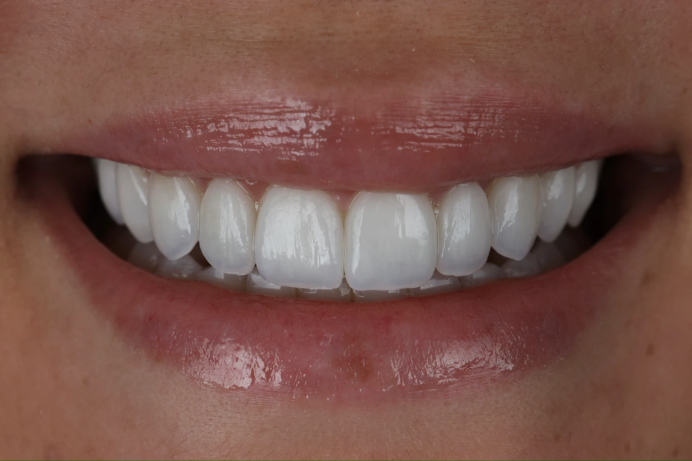
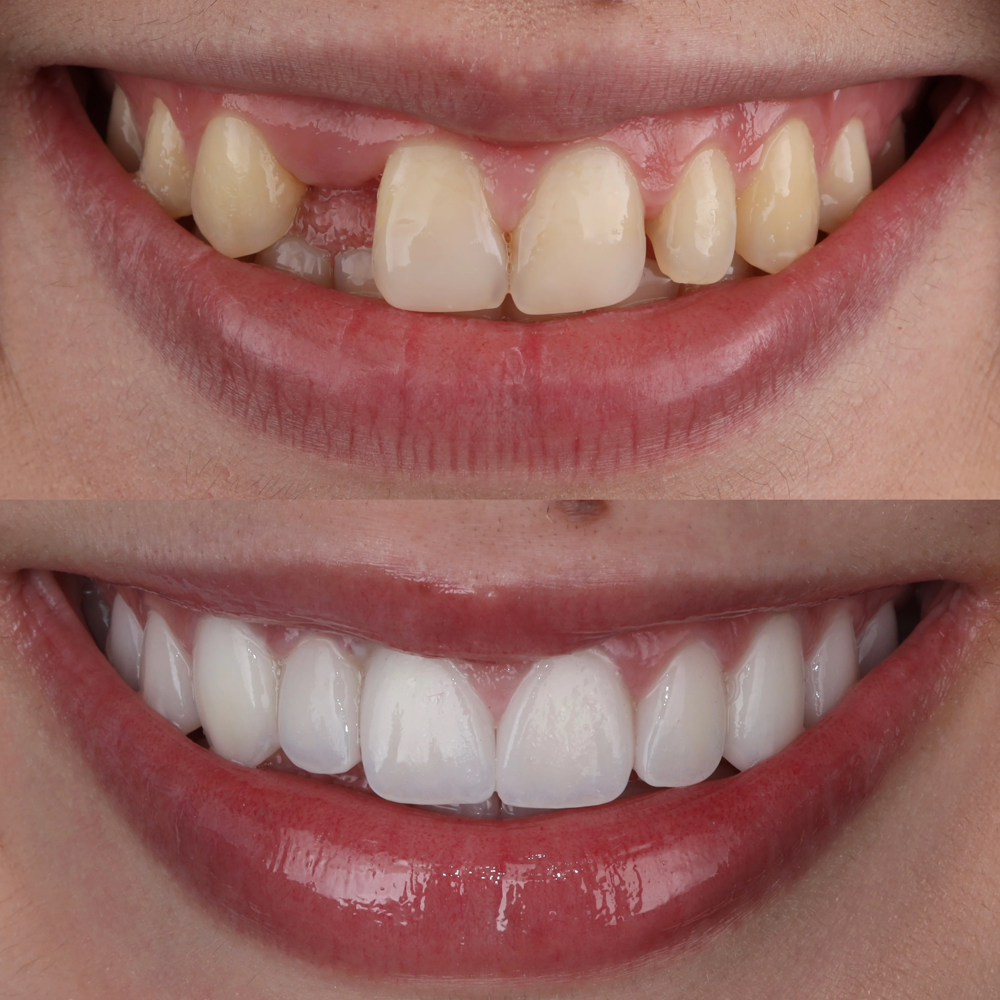
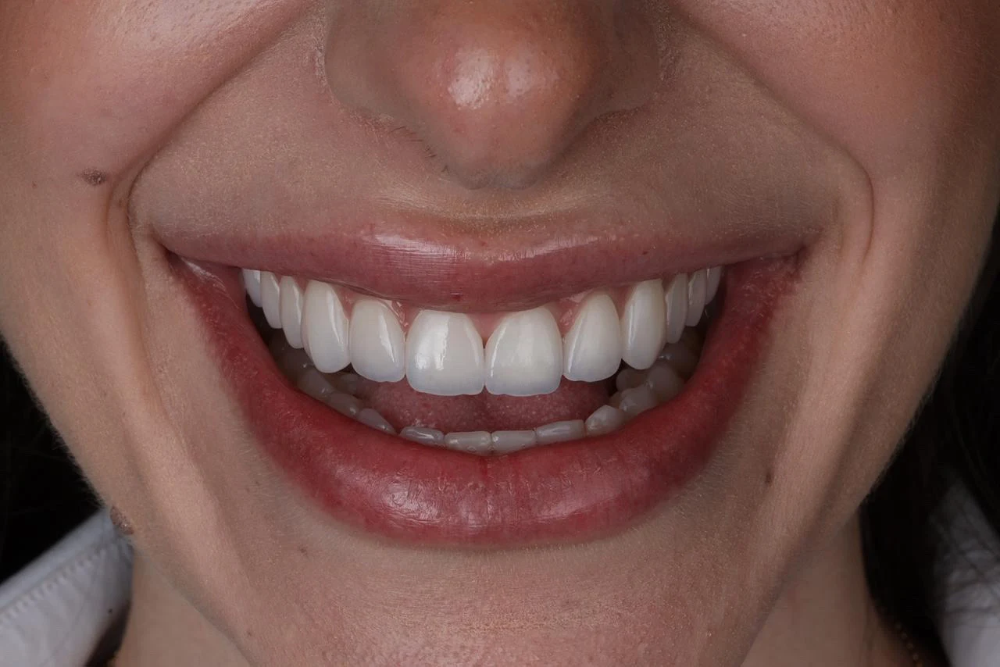
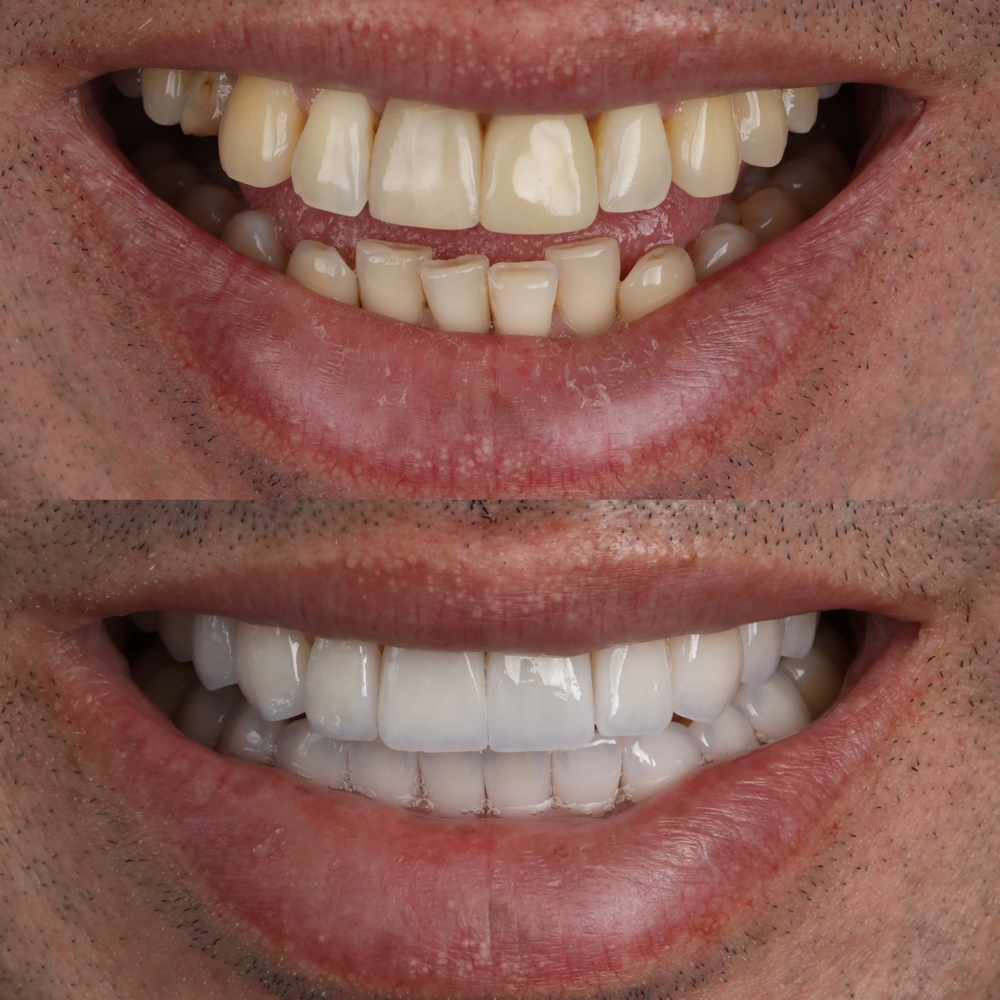
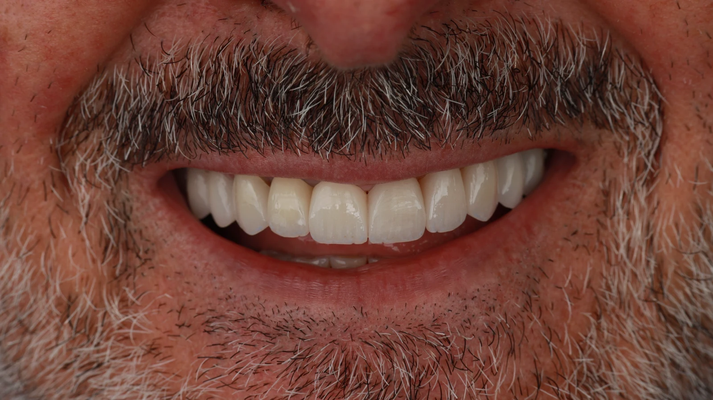
Seu próximo caso pode sair do jeito que você planejou.
Do briefing à cimentação, com o método da Nive e suporte direto de quem faz a clínica e o laboratório.